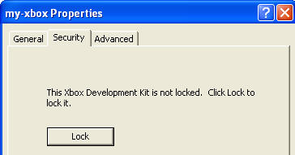
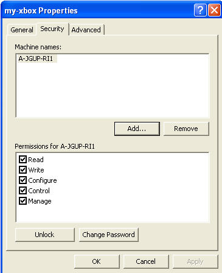
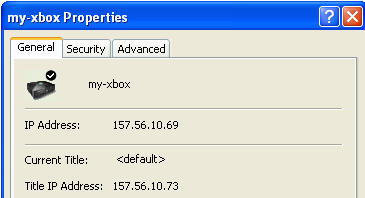
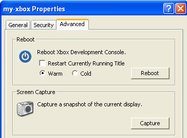

The Microsoft® Windows® Explorer Shell Extension for Xbox® extends all of the usual Windows Explorer commands. In addition, many new features can be accessed using either:
Within Xbox Neighborhood, right-click on an Xbox to take any of the following actions:

By clicking Lock, security is enabled, and the information displayed in the Security tab changes.

This allows the user to add (or remove) machines in the list of those which have permissions on the Xbox. Various permissions can be assigned on a machine-by-machine basis.
| Permissions | Description |
|---|---|
| Read | Allows viewing of the directories and files on the Xbox. |
| Write | Allows copying of files and directories to the Xbox. New files can also be created. |
| Configure | Allow ROM flashes and remote configurations using the XbSetCfg tool. |
| Control | Grants permission to do those actions not covered by the other permissions. Actions include debugging, screen captures, reboots, and so on. |
| Manage | Grants permission to set and change permissions on the Xbox. |
After security has been enabled and permissions granted, it is recommended that the user set a remote administrative password (if one hasn't already been set) by clicking Change Password. Since security is on a machine-by-machine basis, there may be instances where a user will need to access an Xbox from a machine other than their regular computer. When that user tries to access an Xbox that has been locked and given an administrative password, the user will be able to enter the password and continue working. However, even if no password is set, if the Xbox is locked, security will be in effect. The lack of a password just means that users will be tied to the exact permissions granted to the computer they are working on.
The user can choose to unlock the Xbox, removing security, by clicking Unlock.
The host machine must have Manage permission before any security settings can be changed.

The properties page defaults to the General tab. On this page, as shown above, the user is given information about the name of the Xbox, its IP address, whether there is a current title running on the Xbox, and the IP address of that title.
The user can click on the Security tab to set security and permissions on Xbox development systems.
In addition, the user can also click the Advanced tab to enable them to restart the current title, perform both warm and cold reboots, and do screen captures.

If you are within the Xbox Neighborhood, have selected an Xbox, and have clicked on the File menu, the following commands are available: